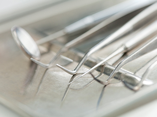
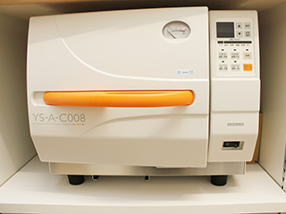

- ホーム
- 医院コンセプト
Concept渋谷ルーブル歯科・矯正歯科はこんな歯医者です～医院コンセプト～
渋谷駅近くの歯医者「渋谷ルーブル歯科・矯正歯科」は、歯並びをきれいにして噛み合わせを整える矯正歯科治療を中心に虫歯治療や歯周病治療などの一般歯科はもちろん、機能と見た目の美しさを両立させる審美治療やインプラント治療などもご提供します。安心して通っていただけるように、丁寧なカウンセリングをおこなうことから始めます。お悩みをじっくり伺い、お口の状態を把握してから、患者様に合う治療計画を一緒に作成する歯科医院です。こちらでは患者様に安心してご来院いただけるように当院が心がけているポイントをご紹介します。
渋谷ルーブル歯科・矯正歯科の4つのポイント
POINT-1 通いやすい歯科医院
矯正治療はほかの歯科診療にくらべて通院が長期間におよびます。そのため患者様にとって通いやすいことが大切です。当院は、平日や土曜はもちろん、日曜も隔週で診療しますので、平日がお忙しい方もご来院いただきやすい歯科医院です。また渋谷駅から近いので雨模様でも苦になりません。天候に左右されずにご来院いただけます。そして患者様をお待たせしないようにご予約優先です。そのための予約システムを構築しています。
POINT-2 衛生管理を徹底していて安心して通える

医療機関として、院内を清潔に保つのは当然ですが、毎日の除菌清掃をおこない、毎回の医療機器滅菌作業にて衛生面に注意を払い、感染予防に取り組んでいます。また患者様が不安を感じないように初診では丁寧なカウンセリングをおこないます。まず患者様のお話をじっくり伺うことからはじめるのです。そして口腔内写真を撮影し、状態を把握し、その情報をもとに治療計画を打ち合わせします。双方で治療のゴールを共有し、患者様にご納得いただいた治療計画を進めていきます。
POINT-3 高品質の治療を受けられる

常に質の高い診療をご提供するために、歯科医師がグループ医院をまわり、さまざまな症状の治療にあたります。グループには14名の歯科医師が在籍し、さまざまな情報を共有し、より安全でより安心な治療をご提供いたします。
歯を残すことが基本です。そしてお口全体の健康を考え、機能性を重視したうえで、噛み合わせを整え、虫歯や歯周病の予防にも力を入れます。矯正歯科も一般歯科もトータルで治療が可能です。虫歯や歯周病治療のあと、矯正治療やインプラント治療をおこない、トータルケアをご提供します。
またグループ内には歯科技工所もあり、人工歯の作製においての連携が密に取れます。患者様一人ひとりに合わせた細かい指示も伝わりやすいので、精密治療につながります。また、患者様のまわりの歯に合わせた自然な見た目の人工歯の作製も可能です。さらに、当院の歯科衛生士は勉強会などに積極的に参加し、つねに技術の向上に努めています。離職率が低く、医療のアシストがしっかりできレベルが高いので、さらに安心の医療のご提供が可能です。
インプラント治療において、顎の骨が足りない場合にまず歯周組織再生療法をおこなってからの治療もできます。また顎の骨の中に親知らずなどが埋まったままの埋伏歯の抜歯も外科処置を専門におこなう歯科医師が担当しますので安心です。
POINT-4 安心の明瞭会計
医療グループで連携した歯科医療をご提供できるので、とくに矯正歯科医療において必要な材料や器具などの大量購入ができます。そのため比較的費用を抑えられるのです。専門知識と経験が求められる裏側矯正など難易度の高い矯正治療も、治療前に価格をご提示する安心の明瞭会計。また歯科医師と矯正装置を作製する歯科技工士の連携が密なので、質の高い治療をご提供できます。
一般歯科